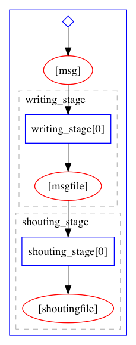

Yadage Tutorial
Installing
If you are on your laptop you can install yadage via
pip install yadage
If you'd like to visualize workflows add [viz] to the command
in order to install the necessary dependencies
pip install yadage[viz]
Using on LXPLUS at CERN (for high energy physicists)
Usually you cannot easily install custom python packages on LXPLUS,
therefore a pre-setup version is installed and usable from the
lxplus-cloud flavor of nodes
ssh lxplus-cloud.cern.ch
source ~recast/public/setup.sh
Where is this going?
In this tutorial we will build a simple workflow that runs two tasks one after the other.
The first task runs a program that takes in a message string and writes it out to an output file
The program that does this is written in C++
The second tasks reads in the file written by the first task and transforms its contents into all upper case letters
The program for this step is writte in Python.

Building Docker Images
Note for LXPLUS Image building is not yet suppored there. Feel free to read along or try this out on your personal laptop, or if you want to jump to the next section go to Writing Individual Job Templates.
One of the main ideas of yadage is to orchestrate workflows where each step in the workflow runs in its own sandbox. This efficiently separates the domain- specific code in the sandbox from the workflow logic.
As a sandboxing technology Linux Containers that you can e.g. build with docker are
very popular. For this tutorial we are building two container images, one for
the C++ program and one for the Python program.
The images are already built and available at
https://hub.docker.com/r/yadage/tutorial-messagewriter/
and
https://hub.docker.com/r/yadage/tutorial-uppermaker/
if you want to build them yourself you can do
cd images/message_writer
docker build -t <username>/tutorial-messagewriter .
docker push <username>/tutorial-messagewriter
or
cd images/message_writer
docker build -t <username>/tutorial-uppermaker .
docker push <username>/tutorial-uppermaker
where <username> is your Docker Hub username. This will assemble the
Docker images on your laptop (docker build). In the case of the C++
program it will compile the program while for the Python program it will
simply copy the program into the container image.
The images then contain all dependencies. That is, not only the programs themselves but also the operating system and programming language runtime (C++ and Python respectively) needed to execute the programs as well.
Testing the images
As the images include all dependencies we can now 'pull' the Docker image on any other computer and run the programs
docker run --rm -it yadage/tutorial-messagewriter sh
/code # /code/message_writer hello outputfile.txt
Hello World. We will write this message: hello
Done! try looking into outputfile.txt
/code # cat outputfile.txt
Hello, the message was: hello
/code # exit
Note, how after you exit all traces of the container and the output file you just created
are gone. The advantage of Linux Container technology is isolation and containers
that you run using docker run are ephemeral.
Each new container that you run using docker run starts off in exactly the same state,
which is great for reproducibility.
We can also test the second container image
/ # echo shout this > input.txt
/ # python /code/uppermaker.py input.txt output.txt
INFO:uppermaker:Hello There, we will take the contents of input.txt
INFO:uppermaker:and make them all UPPER CASE!!
INFO:uppermaker:Find the result in output.txt
/ # cat output.txt
SHOUT THIS
/ # exit
Sharing State
While the ephemeral nature of containers is nice, sometimes you do want to persist some data that you created within the container, perhaps because you want to do something else with this. For this we can loosen the strict isolation of the container a bit and 'mount* a directory from the host computer into the container
docker run --rm -it -v $PWD/savehere:/data yadage/tutorial-messagewriter sh
/code # /code/message_writer hello /data/outputfile.txt
/code # cat /data/outputfile.txt
Hello, the message was: hello
/code # exit
-v $PWD/savehere:/data instructs docker to map the $PWD/savehere directory on your
host computer into the /data directory within the container. So files that you write
into /data within the container get persisted.
We can now see the output file in savehere/outputfile.txt
cat savehere/outputfile.txt
Hello, the message was: hello
docker run --rm -it -v $PWD/savehere:/data yadage/tutorial-uppermaker sh
/ # python /code/uppermaker.py /data/outputfile.txt /data/secondfile.txt
/ # exit
cat savehere/secondfile.txt
HELLO, THE MESSAGE WAS: HELLO
This seems great! we can use pre-packaged software archived in docker images to run the series of commands that we want. But we had to manage a lot of things by hand: e.g. running Docker with the right flags to persist the data and executing the commands in the right order. I.e. we needed to exactly know how to do these things, which is sometimes referred to as a "imperative style" or computing.
In the following we will now introduce a more "declarative" style in which we only specify what we want
to do and let a "workflow engine", i.e. yadage, figure out how to do it.
Writing Individual Job Templates
Looking at the commands above, we notice that a lot of the commands we executed depended on some specifics of how we ran the containers and the exact paths of files we use as input and output.
In order to make re-usable workflows we need to replace the concrete commands but rather "command templates" such that we or the workflow engine can use these templates to create new commands once we e.g. have the correct inputs available.
In order to fully specify what we want to do we need to provide three ingredients
- The Command Template: a parametrized version of the command line
- An Output Specification: What are we achieving with running the command constructed from 1. I.e. what are the interesting files that are being produced here.
- An Environment Specification: Where do we run this command? Here we can specify the Docker image which holds the right program within itself.
The Message Task
A simple example of the message writing task we ran above is shown below. Put this into
a file steps.yml.
messagewriter:
process:
process_type: interpolated-script-cmd
script: |
/code/message_writer '{message}' {outputfile}
publisher:
publisher_type: interpolated-pub
publish:
msgfile: '{outputfile}'
environment:
environment_type: docker-encapsulated
image: yadage/tutorial-messagewriter
We can check that we wrote this specification correctly by running:
packtivity-validate steps.yml#/messagewriter
which should show
packtivity definition is valid
We can now execute this task by passing only the message and outputfile parameters as well as a writable directory
without needing to specify the command or interacting with docker at all.
packtivity-run steps.yml#/messagewriter -p message="Hi there." -p outputfile="'{workdir}/outputfile.txt'" --write first
<TypedLeafs: {u'msgfile': u'/Users/lukas/Code/yadagedev/tutorial/specs/messageworkflow/first/outputfile.txt'}> (prepublished)
2018-11-20 23:04:30,392 | pack.packtivity_sync | INFO | starting file logging for topic: step
<TypedLeafs: {u'msgfile': u'/Users/lukas/Code/yadagedev/tutorial/specs/messageworkflow/first/outputfile.txt'}> (post-run)
The last line shows what the interesting output of this task is. hen we look at it we see our message
cat first/outputfile.txt
which shows
Hello, the message was: Hi there.
The Shouting Task
We can do the same thing for the task that converts a file into upper case. We add the second
spec uppermaker to steps.yml
messagewriter:
process:
process_type: interpolated-script-cmd
script: |
/code/message_writer '{message}' {outputfile}
publisher:
publisher_type: interpolated-pub
publish:
msgfile: '{outputfile}'
environment:
environment_type: docker-encapsulated
image: yadage/tutorial-messagewriter
upppermaker:
process:
process_type: interpolated-script-cmd
script: |
python /code/uppermaker.py {inputfile} {outputfile}
publisher:
publisher_type: interpolated-pub
publish:
shoutingfile: '{outputfile}'
environment:
environment_type: docker-encapsulated
image: yadage/tutorial-uppermaker
We can check again that we defined this correctly (at least syntax-wise)
packtivity-validate steps.yml#/upppermaker
packtivity definition is valid
We can now run this task like the one before. In contrast to the first command line we pass in not only a
writable directory (second) but also a directory from which we read in the data (first)
packtivity-run will then handle running the docker commands with the volume mounts and commands
packtivity-run steps.yml#/upppermaker -p inputfile="$PWD/first/outputfile.txt" -p outputfile="'{workdir}/outputfile.txt'" --write second --read first
We can now see the output file
cat second/outputfile.txt
which shows
HELLO, THE MESSAGE WAS: HI THERE.
So have we achieved? We still need to run two tasks manually, but the information of how the commands are constructed and which environment is needed is all stored in a text file that can be shared across users.
In the next step we will declaratively describe the workflow of running the two tasks in order and how to wire the output of one task to be the input of the next task.
Writing the Workflow
A workflow can be represented as a directed acyclic graph of tasks. In order to describe the workflow, we define a set of "stages" which serve as a recipe on how to construct such a graph, i.e. which nodes and which edges need to be added to the graph.
Write this into a file workflow.yml
stages:
- name: writing_stage
dependencies: [init]
scheduler:
scheduler_type: singlestep-stage
parameters:
message: {step: init, output: msg}
outputfile: '{workdir}/outputfile.txt'
step: {$ref: 'steps.yml#/messagewriter'}
- name: shouting_stage
dependencies: [writing_stage]
scheduler:
scheduler_type: singlestep-stage
parameters:
inputfile: {step: writing_stage, output: msgfile}
outputfile: '{workdir}/outputfile.txt'
step: {$ref: 'steps.yml#/upppermaker'}
We can check that we did everything right via
yadage-validate workflow.yml
We can now run the following command using yadage-run, where the only thing we pass is the msg
parameter to the workflow. This workflow input will then serve as the message parameter of the
first stage (the outputfile parameter is hardcoded into the workflow spec.)
The result of the task scheduled by the writing_stage will be the file published under the msgfile
(as defined in the publisher of the steps.yml#/messagewriter job template)
For the second task the msgfile output is then tied to the inputfile parmeter of the steps.yml#/upppermaker
task. Again, the output file is hardcoded.
The full command looks now like this:
yadage-run workdir workflow.yml -p msg='Hi there.' --visualize
Notice how all details of the workflow: which tasks to run, in which order to run them, the software environments
for each task, the commands of the tasks are all stored in text files now that are archivable and sharable. The
execution of this workflow only requires a single msg parameter.
After the workflow runs we can see the outputs of both tasks in the work directory:
cat workdir/writing_stage/outputfile.txt
Hello, the message was: Hi there.
cat workdir/shouting_stage/outputfile.txt
HELLO, THE MESSAGE WAS: HI THERE.